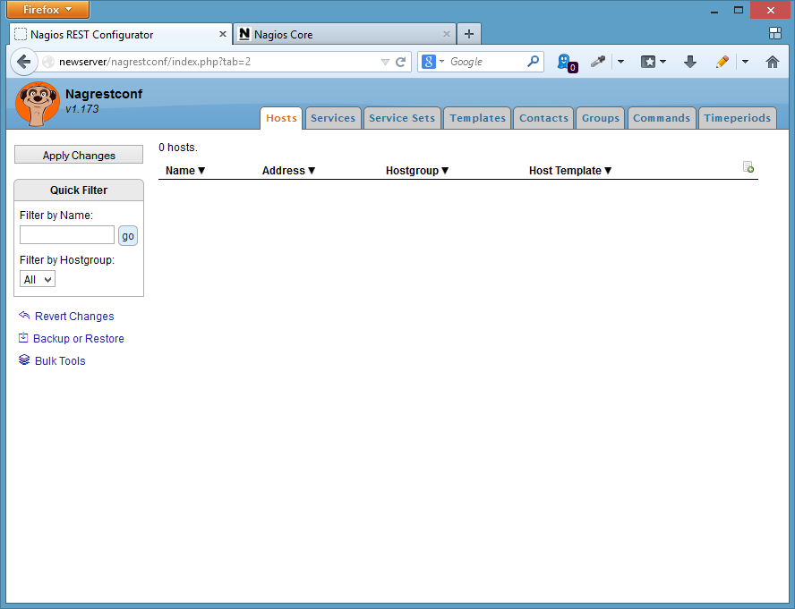
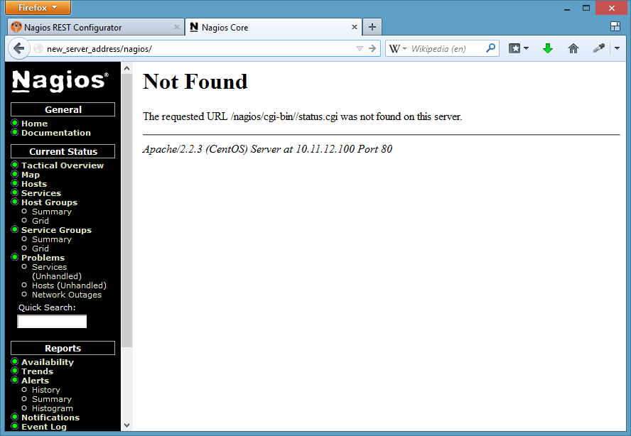
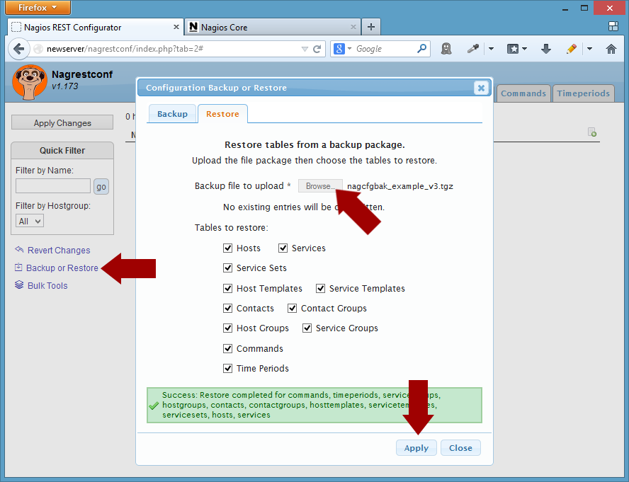
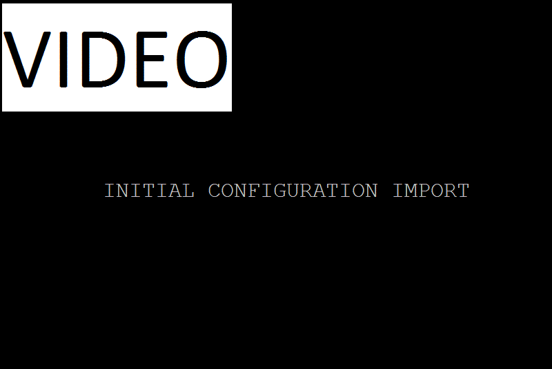
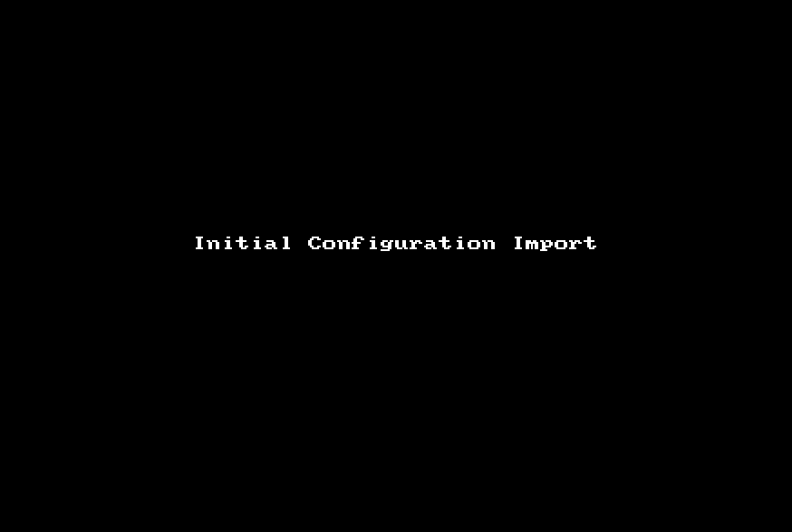

This page details how to install nagrestonf on Ubuntu 16.04 (Xenial).
Packages that nagrestconf depends on, such as Nagios and Apache, will be installed automatically.
The instructions on this page are for installing nagrestconf and its requirements on a new server,
It is not recommended to follow these instructions on an existing server that is currently being used. It might break other applications on the server since packages might be upgraded.
Installation consists of the following steps:
Get the packages for Ubuntu Xenial from the download page then copy them to the server.
Instead of downloading manually it is possible to use wget from the server where nagrestconf is to be installed. Use the following wget commands:
wget https://sourceforge.net/projects/nagrestconf/files/Ubuntu/Xenial%2016.04/1.174.7/nagrestconf_1.174.7_all.deb/download -O nagrestconf_1.174.7_all.deb wget https://sourceforge.net/projects/nagrestconf/files/Ubuntu/Xenial%2016.04/1.174.7/nagrestconf-hosts-bulktools-plugin_1.174.7_all.deb/download -O nagrestconf-hosts-bulktools-plugin_1.174.7_all.deb wget https://sourceforge.net/projects/nagrestconf/files/Ubuntu/Xenial%2016.04/1.174.7/nagrestconf-services-plugin_1.174.7_all.deb/download -O nagrestconf-services-plugin_1.174.7_all.deb wget https://sourceforge.net/projects/nagrestconf/files/Ubuntu/Xenial%2016.04/1.174.7/nagrestconf-backup-plugin_1.174.7_all.deb/download -O nagrestconf-backup-plugin_1.174.7_all.deb wget https://sourceforge.net/projects/nagrestconf/files/Ubuntu/Xenial%2016.04/1.174.7/nagrestconf-services-bulktools-plugin_1.174.7_all.deb/download -O nagrestconf-services-bulktools-plugin_1.174.7_all.deb
Open a terminal window or ssh session then install nagrestconf and all plugins:
sudo apt-get update
sudo apt-get install gdebi-core
sudo gdebi nagrestconf_1.174.7_all.deb
sudo dpkg -i nagrestconf-services-plugin_1.174.7_all.deb \
nagrestconf-services-bulktools-plugin_1.174.7_all.deb \
nagrestconf-hosts-bulktools-plugin_1.174.7_all.deb \
nagrestconf-backup-plugin_1.174.7_all.deb
Use the two helper scripts 'nagrestconf_install' and 'slc_configure'.
sudo nagrestconf_install -a sudo slc_configure --folder=local
Change two variables in nagios.cfg
sudo sed -i 's/check_external_commands=0/check_external_commands=1/g' /etc/nagios3/nagios.cfg sudo sed -i 's/enable_embedded_perl=1/enable_embedded_perl=0/g' /etc/nagios3/nagios.cfg
Relax permissions for the pipes
sudo chmod 770 /var/lib/nagios3/rw/
Create a password for nagrestconfadmin - for GUI access to nagrestconf.
sudo htpasswd -bc /etc/nagios3/nagrestconf.users nagrestconfadmin a_password
Note that, by default, the nagrestconf GUI can only be reached from the host it was installed on, localhost. To enable connecting to nagrestconf from other hosts edit the apache configuration.
For example,
Edit /etc/apache2/conf.d/nagrestconf.conf:
sudo cp /etc/apache2/conf-available/nagios3.conf /tmp
sudo sed -i 's#AuthUserFile .*#AuthUserFile /etc/nagios3/nagrestconf.users#i' \
/etc/apache2/conf-available/nagrestconf.conf
sudo sed -i 's/allow from 127.0.0.1/allow from all/i' \
/etc/apache2/conf-available/nagrestconf.conf
sudo sed -i 's/#Require/Require/i' /etc/apache2/conf-available/nagrestconf.conf
sudo sed -i 's/#Auth/Auth/i' /etc/apache2/conf-available/nagrestconf.conf
Restart apache and nagios
sudo service apache2 restart sudo service nagios3 restart
The nagios restart will show errors since the configuration is empty.
The nagrestsconf and nagios web interfaces should be accessible now.
Log into nagrestconf with user 'nagrestconfadmin', and the password that was set above.
The nagrestconf interface, at 'http://server/nagrestconf', will look like the following screen shot.

Log into nagios with user 'nagiosadmin', and the password that was set above.
The nagios interface, at 'http://server/nagios3', will look like the following screen shot.

To create a simple test configuration use a script that makes REST calls, or use the 'Backup/Restore' button in the nagrestconf GUI. The latter method will be used in this guide.
An example configuration can be downloaded from this link, then log into nagrestconf and use the 'Backup/Restore' button.



Click 'Close' in the 'Backup/Restore' dialog then refresh the page.
The new configuration will not appear in the Nagios Web interface until the 'Apply Changes' button is clicked, and then applied.
That's it!
comments powered by Disqus Nagrestconf
Nagrestconf